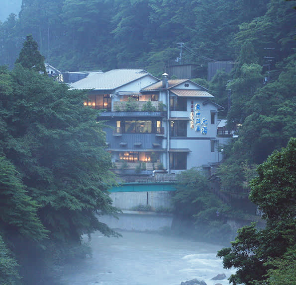

Wakayama is situated on Japan’s largest peninsula known as the Kii-hanto at latitude 34.14° North and longitude 135.10° East. Wakayama is warm year round; the weather is so mild that bougainvillea bloom even in Winter. Annual precipitation is around 1,000 mm in northern Wakayama, and over 2,000 mm in the south. The mountainous regions receive higher and heavy rainfall, with over 3,000 mm annually. Japan’s rainy season, known as tsuyu, typically starts from the beginning of June and lasts until mid-July; intense downpours are common. The upside of the rainy season is that popular outdoor attractions tend to be less busy. (Source: Wakayama Official Tourism Site)
Prefecture Image
Nachino Fire Festival
Stunning View of Wakayama
Ryujin Onsen
